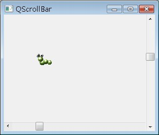

QScrollArea提供您方便為某個元件在畫面不足以顯示元件時，直接加上捲軸輔助顯示，而QScrollBar則可以讓您單獨建立水平或垂直捲軸功能，以自訂捲軸的控制行為。
例如以下的程式，將自行建立水平與垂直捲軸，以控制畫面中的QLabel位置：
#ifndef SCROLLIMAGE_H
#define SCROLLIMAGE_H
#include <QWidget>
class QLabel;
class ScrollImage : public QWidget {
Q_OBJECT
public:
ScrollImage(const QPixmap &, QWidget *parent = 0);
public slots:
void setX(int);
void setY(int);
private:
QLabel *label;
};
#endif
ScrollImage為自訂元件，繼承自QWidget，並自訂了兩個Slot，以接受水平與垂直捲軸的數值Signal，其實作如下所示：
#include "ScrollImage.h"
#include <QScrollBar>
#include <QLabel>
#include <QPixmap>
ScrollImage::ScrollImage(
const QPixmap &pixmap, QWidget *parent) : QWidget(parent) {
this->resize(pixmap.width() * 10, pixmap.height() * 10);
label = new QLabel(this);
label->setPixmap(pixmap);
label->setGeometry(20, 20, pixmap.width(), pixmap.height());
// 水平捲軸
QScrollBar *hScrollBar = new QScrollBar(Qt::Horizontal, this);
hScrollBar->setGeometry(0, this->height() - 20, this->width(), 20);
hScrollBar->setMaximum(this->width() - pixmap.width() - 20);
connect(hScrollBar, SIGNAL(valueChanged(int)),
this, SLOT(setX(int)));
// 垂直捲軸
QScrollBar *vScrollBar = new QScrollBar(Qt::Vertical, this);
vScrollBar->setGeometry(this->width() - 20, 0, 20, this->height());
vScrollBar->setMaximum(this->height() - pixmap.height() - 30);
connect(vScrollBar, SIGNAL(valueChanged(int)),
this, SLOT(setY(int)));
}
void ScrollImage::setX(int x) {
label->setGeometry(20 + x, label->y(), label->width(), label->height());
}
void ScrollImage::setY(int y) {
label->setGeometry(label->x(), 20 + y, label->width(), label->height());
}
來撰寫一個主程式進行程式執行與測試：
#include "ScrollImage.h"
#include <QApplication>
#include <QPixmap>
int main(int argc, char *argv[]) {
QApplication app(argc, argv);
ScrollImage *scrollImage =
new ScrollImage(QPixmap("caterpillar_small.gif"));
scrollImage->setWindowTitle("QScrollBar");
scrollImage->show();
return app.exec();
}
下圖為執行時的參考畫面，拉動捲軸時，圖片會跟著移動：

|
|